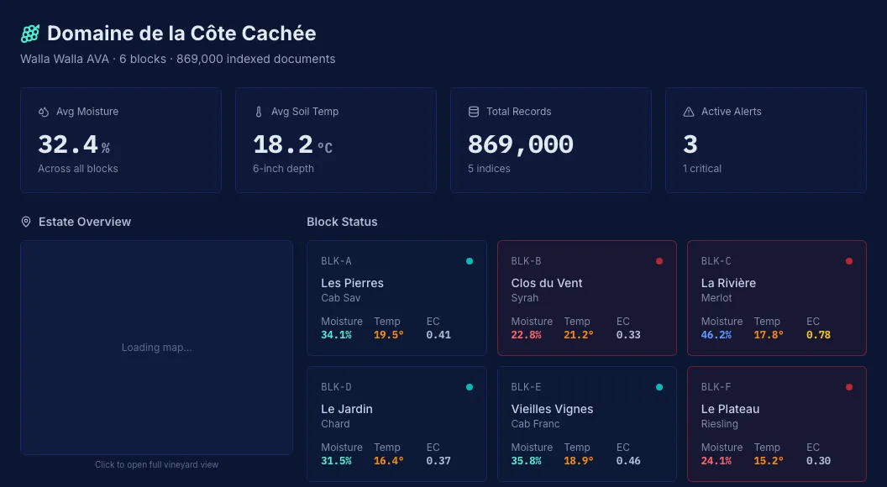
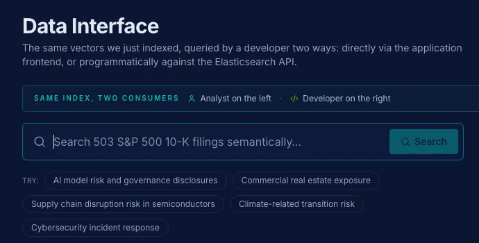
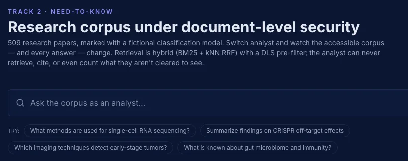

01 · Vineyard Intelligence

Practice 9:15Race is staged
An agronomist reads eight years of estate data and plans the fix for Block C.
PatternSensor analytics plus a five-phase agent pipeline
ModelsNemotron 3.5 Lightning
02 · SEC Findings

Practice 9:45Chapters 03 and 04 live
Ask 10-K filings in plain words, then let an agent count and compare them.
PatternSemantic search plus an Agent Builder agent over filings
ModelsNemotron 3.5 Lightning · Jina Embeddings v5 Omni
03 · Multimodal Intelligence

Practice 8:15Filter is application side
Type words, get pictures. Four analysts ask one question and see four answers.
PatternText and image search with Jina v5 Omni plus need-to-know filtering
ModelsJina Embeddings v5 Omni · Nemotron 3.5 Lightning
Every demo starts at the kit chooser on :3000. Practice targets from the mock. Screens are kit frontend captures.